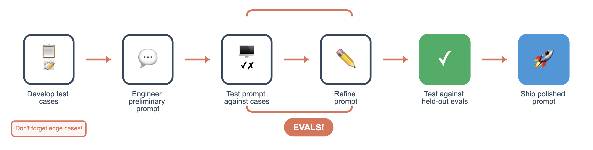
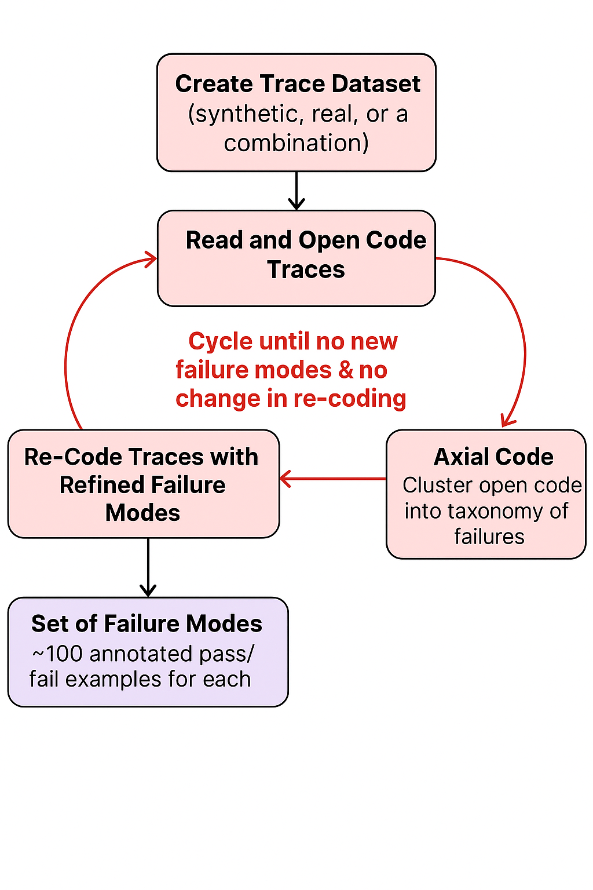

Error Analysis Guide
Table of Contents
- Error Analysis
- Creating a Starting Dataset
- Open Coding: Read and Label Traces
- Axial Coding: Structuring and Merging Failure Modes
- Labeling Traces after Structuring Failure Modes
- Iteration and Refining the Failure Taxonomy
- Common Pitfalls
- Exercise
Error Analysis - Exercise
Error Analysis
This section outlines a systematic and iterative methodology for the "Analyze" stage of the LLM evaluation lifecycle, which focuses on uncovering pipeline failure modes.

Creating a Starting Dataset
The process begins with collecting around 100 "traces," which are full sequences of inputs, outputs, and actions taken by the LLM pipeline for a given input.
Key Considerations:
- Diversity of traces is crucial to stress different parts of the system and reveal a wide range of failure modes
- If real user queries are scarce, synthetic data can be generated systematically
Synthetic Data Generation Process:
- Define key dimensions of the query space (e.g., Feature, Client Persona, Scenario Type) that describe where the AI application is likely to fail
- Create structured combinations of these dimensions, called "tuples" (e.g., (Feature: Property Search, Client Persona: Investor, Scenario Type: Ambiguous))
- Use an LLM in a two-step process:
- First, generate 10-20 tuples
- Then, generate natural-language queries from each tuple
- Human review is crucial after each step to ensure quality and realism
📊 Synthetic Query Generation Flow
Open Coding: Read and Label Traces
Once traces are collected, systematic reading and labeling begin, adapting "open coding" from grounded theory.
Process: - Reviewers read each trace carefully and write brief notes ("open codes") about observed incorrect outputs, surprising actions, or unexpected behavior - Focus is on identifying the first (most upstream) failure in a trace, as early errors often cascade into downstream issues - Continue initial annotation until reaching "theoretical saturation"—where new traces reveal few or no fundamentally new error types - Common LLM failure categories can be used as lenses to help identify problems when stuck
Axial Coding: Structuring and Merging Failure Modes
This step organizes the chaotic open-coded observations into a structured, coherent list of unique, recurring "failure modes."
Key Activities: - Clustering similar failure notes into higher-order categories (e.g., "Missing constraint" and "invalid action" might become "Violation of user constraints") - Refining failures by splitting overly broad categories into more distinct binary types (e.g., "bad communication" splitting into "persona misidentification" and "inappropriate tone and style") - LLM assistance can help propose preliminary groupings, but human review and adjustment are essential
| Coding Type | Purpose | Process | Outcome |
|---|---|---|---|
| Open Coding | Initial exploration of raw data. | Assign descriptive labels freely. | Preliminary tags/categories |
| Axial Coding | Identify relationships & patterns. | Organize open codes into broader categories | Structured hierarchy of categories |
Labeling Traces after Structuring Failure Modes
The goal is to systematically apply the defined, binary failure modes (present/absent, 1/0) to each trace in the dataset.
📎 Table 1: Early Trace Observations
| User Query | Trace Summary | First-Pass Annotation |
|------------|----------------|------------------------|
| Find pet-friendly homes | SQL query → listings → email | Pet-friendly filter missing |
| Set up weekend showings | Calendar API | Invalid unavailable dates |
| Investor property list | ROI search → starter home email | Tone mismatch |
Purpose: - Bridges the gap from qualitative observation to quantitative data - Allows for the computation of error rates for each failure mode
Iteration and Refining the Failure Taxonomy
Error analysis is inherently iterative, often requiring two or three rounds of reviewing traces and refining the failure taxonomy.
Evolution Process: - As understanding deepens, categories might be merged, split, or definitions clarified - Initial labeling focuses on the "point of first failure" - Mature evaluation may require more exhaustive labeling of all instances of a failure mode within a trace

Common Pitfalls
- Failing to test on representative data
- Skipping open coding and defaulting to generic LLM failure categories without grounding in real examples
- Inappropriate use of Likert scales in early annotation, which can introduce noise due to underspecified rubrics—preferring binary decisions instead
- Treating initial annotations and failure modes as fixed too early, hindering schema evolution
- Excluding domain experts from the labeling process
Key Takeaway: The "Analyze" phase (Error Analysis) is crucial for developing a well-understood, application-specific vocabulary of failure, which is essential before quantitatively measuring these failures at scale and driving improvements.
Exercise
Quick Links
- Exercise 1: Synthetic Data Generation (Travel Assistant)
- Exercise 2: Synthetic Data Generation (E-Commerce Chatbot)
- Exercise 3: Open Coding Practice (Travel Assistant)
- Exercise 4: Open Coding Practice (E-Commerce Chatbot)
- Exercise 5: Axial Coding Practice (Cross-Domain)
- Exercise 6: Failure Mode Instance Augmentation
1. Synthetic Data Generation (Travel Assistant)
Define three key dimensions for a travel booking assistant. Then: - (a) List at least three values for each dimension. - (b) Write a prompt to generate 10 random structured tuples. - (c) Write a prompt to convert one example tuple—e.g.(Find Flight, Luxury Traveler, Flexible Dates)—into a natural-language query.
Solution 3.1
Dimensions and values: - Task Type: {Find Flight, Find Hotel, Find Flight+Hotel, Activity Recommendation, General Inquiry} - Traveler Profile: {Budget Traveler, Business Traveler, Family Vacationer, Luxury Traveler, Solo Backpacker} - Date Flexibility: {Exact Dates, Flexible Dates, Open-Ended}
(b) Prompt to generate tuples:
Generate 10 random combinations of (Task Type, Traveler Profile, Date Flexibility) for a travel booking assistant.
Possible values:
- Task Type: Find Flight, Find Hotel, Find Flight+Hotel, Activity Recommendation, General Inquiry
- Traveler Profile: Budget Traveler, Business Traveler, Family Vacationer, Luxury Traveler, Solo Backpacker
- Date Flexibility: Exact Dates, Flexible Dates, Open-Ended
Output each as: (Task Type, Traveler Profile, Date Flexibility)
Ensure no duplicates and good coverage.
(c) Prompt to convert one tuple to a query:
We are generating synthetic user queries for a travel assistant.
Given:
- Task Type: Find Flight
- Traveler Profile: Luxury Traveler
- Date Flexibility: Flexible Dates
Write a realistic query a luxury traveler might use, reflecting flexibility in travel dates.
Example (for another tuple): (Find Hotel, Business Traveler, Exact Dates) → "Need a 4-star hotel near the airport in Seattle from Sept 10–12, must have airport shuttle."
Now generate a query for (Find Flight, Luxury Traveler, Flexible Dates).
2. Synthetic Data Generation (E-Commerce Chatbot)
Define three key dimensions for an e-commerce chatbot. Then: - (a) List at least three values for each dimension. - (b) Write a prompt to generate 10 random structured tuples. - (c) Write a prompt to convert one example tuple into a natural-language query.
Solution 3.2
Dimensions and values: - Intent: {Search Product, Compare Prices, Check Availability, Track Order, Return Request} - Customer Segment: {Bargain Hunter, Brand-Loyal, Gift Shopper, Bulk Buyer} - Urgency: {Immediate Need, Planned Purchase, Browsing}
(b) Prompt to generate tuples:
Generate 10 random combinations of (Intent, Customer Segment, Urgency) for an e-commerce chatbot.
- Intent: Search Product, Compare Prices, Check Availability, Track Order, Return Request
- Customer Segment: Bargain Hunter, Brand-Loyal, Gift Shopper, Bulk Buyer
- Urgency: Immediate Need, Planned Purchase, Browsing
Output each as: (Intent, Customer Segment, Urgency)
No duplicates; maximize variety.
(c) Prompt to convert one tuple to a query:
We are generating synthetic user queries for an e-commerce chatbot.
Given:
- Intent: Compare Prices
- Customer Segment: Bargain Hunter
- Urgency: Planned Purchase
Write a realistic query a bargain hunter planning ahead might enter.
Example (for another tuple): (Search Product, Gift Shopper, Immediate Need) → "I need a birthday gift–-best-rated wireless earbuds under $100, today."
Now generate a query for (Compare Prices, Bargain Hunter, Planned Purchase).
3. Open Coding Practice (Travel Assistant)
Below is a multi-step agent trace. Perform open coding: write purely observational notes on each issue and identify the first (upstream) significant failure.
User Query: Book a budget flight from NYC to Rome on July 15 and a hostel nearby.
Trace Steps:
-
LLM → FlightSearch API
FlightSearch(origin="NYC", destination="Rome", date="2025-07-15", class="economy", maxPrice=100) -
API → LLM
[] // no matching economy flights under $100 -
LLM → FlightSearch API
FlightSearch(origin="NYC", destination="Rome", date="2025-07-15", class="business") -
API → LLM
[{flight:"BA100",class:"business",price:350}, {flight:"UA200",class:"business",price:400}] -
LLM → HotelSearch API
HotelSearch(location="Trastevere", date="2025-07-15", maxPrice=80) -
API → LLM
["Hostel A – Trastevere, $75/night", "Hostel B – Trastevere, $65/night"] -
LLM → User
Here are business-class flights and hostels in Trastevere...
Solution 3.3
Open Coding Observations: - "Second flight search call drops the budget filter." - "All flights returned are business class at $350+." - "Hotel suggestions are in Trastevere, not near the Colosseum."
First significant failure: Step 3's FlightSearch call no longer enforces the user's budget or economy preference.
4. Open Coding Practice (E-Commerce Chatbot)
Perform open coding on this trace:
User Query: Find noise-cancelling headphones under $200 with at least 20h battery life.
Trace Steps:
-
LLM → ProductSearch API
ProductSearch(category="headphones", filters={price<=200}) -
API → LLM
[{id:123,name:"Model X",price:250,battery:22}] -
LLM → User
"Model X: $250, 22h battery life."
Solution 3.4
Open Coding Observations: - "Search results include a $250 model despite price<=200." - "Battery-life filter was never applied." - "Final suggestion ignores budget constraint."
First significant failure: Step 1's ProductSearch call omitted the battery-life filter, leading to out-of-budget results.
5. Axial Coding Practice (Cross-Domain)
You have collected these raw annotations: - "Omitted budget filter in flight search." - "Returned business class instead of economy." - "Suggested hostel in wrong area." - "Missed battery-life constraint." - "Recommended out-of-stock item." - "Used casual tone for a business inquiry." - "Scheduled hotel check-in on an unavailable date." - "Provided inaccurate product specs." - "Ignored shipping urgency." - "Generated flight date different from request."
Cluster these into 3–4 structured, binary failure modes. For each, give a title and one-line definition.
Solution 3.5
Identified Failure Modes:
-
Constraint Violation (Search): Fails to apply user-specified filters (price, battery, availability) in retrieval steps.
-
Action/Timing Conflict: Proposes actions or dates that violate known constraints (availability, dates).
-
Persona/Tone Mismatch: Uses an inappropriate style or tone for the user's context.
-
Factual Inaccuracy: Invents or misreports data (features, specs, locations) not supported by sources.
6. Failure Mode Instance Augmentation
Suppose a particular failure mode—e.g. "Location Ambiguity"—appears very infrequently in your collected traces. Describe how you would generate more queries likely to trigger that failure and then run them through your pipeline to collect additional instances. For one domain (travel or e-commerce):
- (a) Write a prompt template that generates queries targeting that failure mode.
- (b) Provide one example prompt and the synthetic query it produces.
Solution 3.6
Strategy: Use an LLM prompt to create user queries containing ambiguous place names, so that running them through the travel assistant yields mislocalized results.
(a) Prompt template (Travel, Location Ambiguity):
Generate 15 user queries that mention a city name with multiple possible locations (e.g. "Springfield," "Paris," "Bristol") without specifying state or country. The goal is to trigger the assistant's wrong-city interpretation. Output one query per line.
(b) Example:
Generated Query:
Find me a flight from Springfield to Chicago on June 20.
When this query is run through the pipeline, it should produce a trace where the assistant uses the wrong "Springfield" (e.g. Springfield, MO instead of MA), giving another instance of the Location Ambiguity failure.